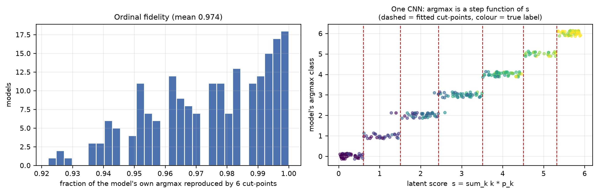
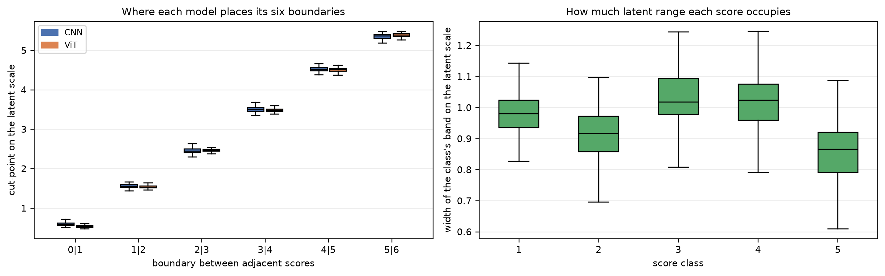
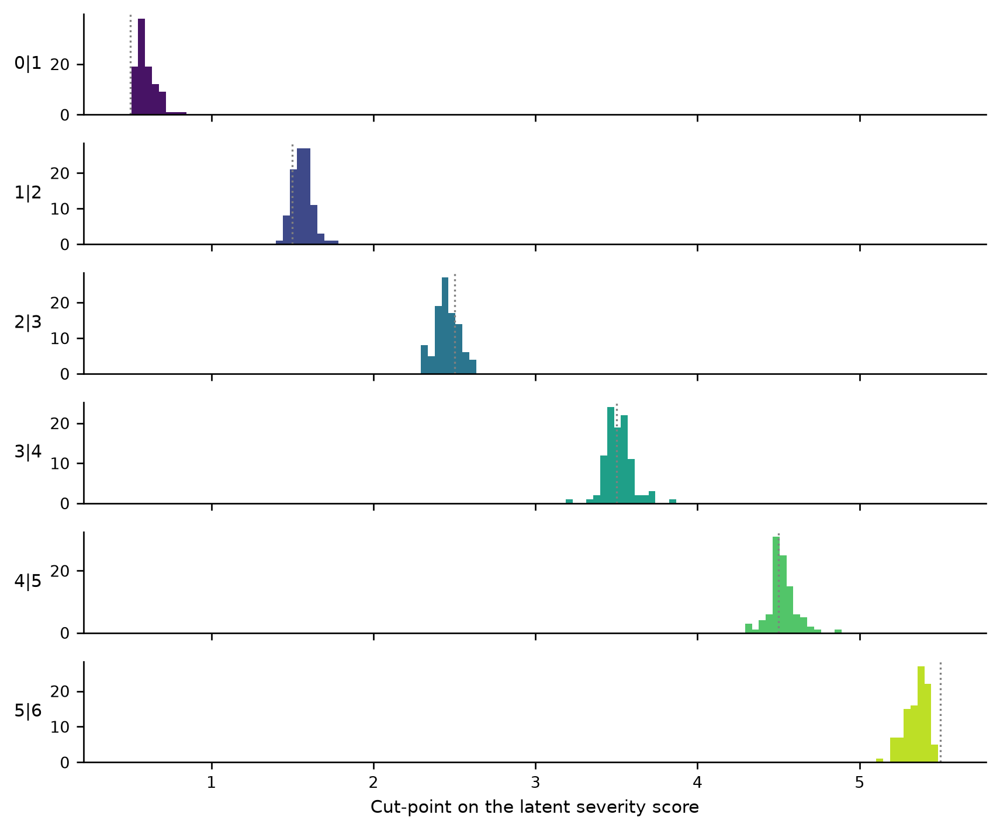
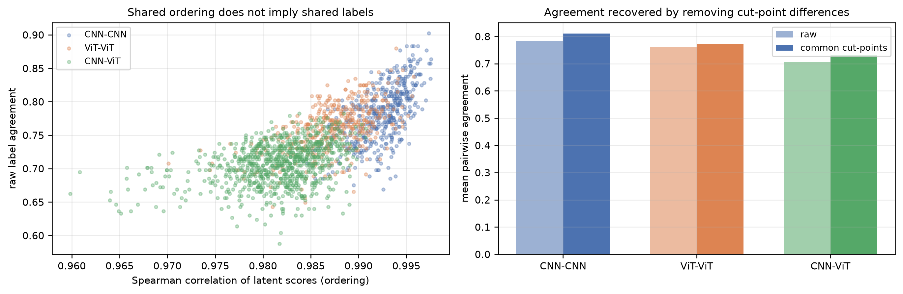
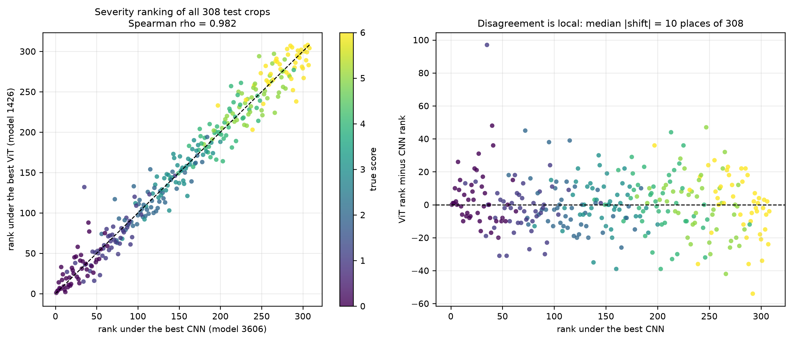
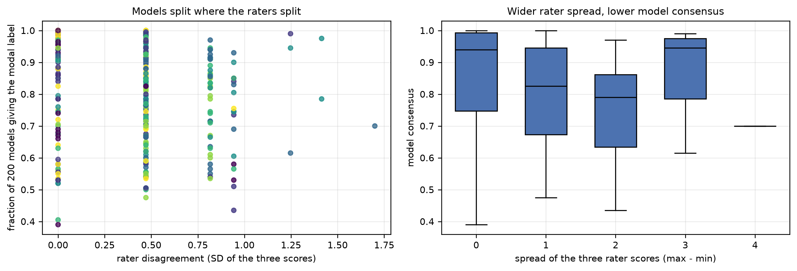

Ordinal decision boundaries: do models disagree about severity, or about where to cut it?
Date: 09/09/2026
GOHREP
Goal:
The severity score is ordinal, so a 7-class classifier is really placing six consecutive boundaries on an underlying severity continuum. This analysis tests whether the 200 saved models (100 CNN, 100 ViT) can be described that way, extracts each model’s six cut-points, and then asks the question that matters: when two models disagree about an image, is it because they rank it differently, or because they cut the same ranking in different places?
Hypotheses:
Each model’s 7-class prediction is well approximated by thresholding a single latent score at six cut-points. Categorical cross-entropy does not enforce this — nothing in the loss knows the classes are ordered — so it is an empirical claim, not a given.
Models will agree on the ordering of images far more than they agree on the labels. analyses/05 found mean pairwise prediction agreement of 0.779 with 237 of 308 images split; if the ordering is shared, most of that disagreement is cut-point placement rather than perception.
Cut-point spread will be widest in the middle of the scale. analyses/03 and analyses/05 both located the errors at the middle scores, with near-miss saturating near 0.98, which is what boundary jitter between adjacent classes looks like.
CNNs and ViTs will differ more in cut-points than in ordering. analyses/07 found cross-architecture prediction agreement of 0.710 against 0.779 within CNNs, yet identical accuracy — a pattern that a shared ordering with different cuts would produce.
Rationale:
This decomposition has a direct consequence. Disagreement from different cut-points is a calibration problem: it can be removed after training by re-thresholding, and an ensemble that averages labels is discarding information that averaging the latent score would keep. Disagreement from different orderings is a perception problem and cannot be fixed that way.
analyses/05 showed a majority vote matches the best single model but does not beat it, and that a learned stack over one-hot predictions adds nothing. Both results are what you would expect if the models share an ordering and differ mainly in where they cut it, because voting on labels throws away the continuous quantity the models actually agree on.
Experimental plan:
Score all 308 test crops with all 200 saved models, keeping the full softmax rather than the argmax.
Define a latent severity per model per image and test hypothesis 1 by asking how well six fitted cut-points reproduce that model’s own argmax.
Extract the cut-points and show their spread, by boundary and by architecture.
Decompose pairwise disagreement into an ordering component and a cut-point component.
Locate the images that sit on a boundary, and relate them to the per-image difficulty from analyses/05.
1. Setup
1.1 Packages and models
Code
# 1.1import sysimport warningsfrom pathlib import Pathimport numpy as npimport pandas as pdimport matplotlib.pyplot as pltimport matplotlib.patches as mpatchesfrom scipy.stats import spearmanr, kendalltauwarnings.filterwarnings("ignore")repo_root =next(p for p in Path.cwd().parents if (p /".git").exists())sys.path.append(str(repo_root /"src"))import keras # noqa: E402import base_dataset # noqa: E402import model_builders # noqa: E402,F401 (registers the ViT's custom layers)HERE = repo_root /"analyses"/"11_ordinal_decision_boundaries"CACHE = HERE /"prob_cache"CACHE.mkdir(exist_ok=True)CNN_DIR = repo_root /"models/03_Medoid_CNN_RandomSearch/01_Categorical_Loss/results"VIT_DIR = repo_root /"models/04_Medoid_ViT_RandomSearch/01_Categorical_Loss/results"plt.rcParams.update({"figure.dpi": 120, "font.size": 9})CLASSES = np.arange(7)
2026-09-12 11:15:36.253132: I tensorflow/core/platform/cpu_feature_guard.cc:210] This TensorFlow binary is optimized to use available CPU instructions in performance-critical operations.
To enable the following instructions: AVX2 FMA, in other operations, rebuild TensorFlow with the appropriate compiler flags.
1.2 Full softmax outputs for all 200 models
The argmax alone cannot answer this question — the latent score has to come from the probability vector. Cached, because it is 200 model loads.
Code
# 1.2ds = base_dataset.load_dataset(str(repo_root /"data/datasets/medoid_64/medoid_64.npy"))X = np.asarray(ds["test_images"], dtype="float32")y = np.asarray(ds["test_labels"]).astype(int)ids = np.array([Path(f).stem for f in ds["test_filepaths"]])PROB_FILE = CACHE /"probs.npz"if PROB_FILE.exists(): z = np.load(PROB_FILE) Pc, Pv, cnn_ids, vit_ids = z["cnn"], z["vit"], z["cnn_ids"], z["vit_ids"]print(f"loaded cached probabilities from {PROB_FILE.name}")else:def score_all(results_dir): paths =sorted(results_dir.glob("*/model.keras")) P = np.zeros((len(paths), len(y), 7), dtype="float32") mids = []for i, p inenumerate(paths): m = keras.models.load_model(p) P[i] = m.predict(X, verbose=0) mids.append(int(p.parent.name.split("_")[-1])) keras.backend.clear_session()return P, np.array(mids) Pc, cnn_ids = score_all(CNN_DIR) Pv, vit_ids = score_all(VIT_DIR) np.savez_compressed(PROB_FILE, cnn=Pc, vit=Pv, cnn_ids=cnn_ids, vit_ids=vit_ids)print(f"computed and cached -> {PROB_FILE.name}")P_all = np.concatenate([Pc, Pv])is_vit = np.r_[np.zeros(len(Pc), bool), np.ones(len(Pv), bool)]arch = np.where(is_vit, "ViT", "CNN")pred_all = P_all.argmax(-1)print(f"models: {len(Pc)} CNN + {len(Pv)} ViT = {len(P_all)}")print(f"test images: {len(y)} softmax rows sum to 1: "f"{np.allclose(P_all.sum(-1), 1, atol=1e-4)}")print(f"mean accuracy: CNN {(pred_all[~is_vit] == y).mean():.4f} "f"ViT {(pred_all[is_vit] == y).mean():.4f}")
loaded cached probabilities from probs.npz
models: 100 CNN + 100 ViT = 200
test images: 308 softmax rows sum to 1: True
mean accuracy: CNN 0.6223 ViT 0.6250
2. Is a single latent score enough?
The natural latent severity for an ordinal problem is the expected score, \(s = \sum_k k\,p_k\). It uses the whole probability vector rather than only its mode, and it is monotone in the sense the scale intends: shifting probability mass towards higher classes raises it.
Hypothesis 1 says each model’s argmax is recoverable by cutting its own \(s\) at six thresholds. That is not automatic — the network was trained with categorical cross-entropy, which treats the seven classes as unordered, so nothing forced the argmax to be monotone in \(s\).
2.1 Fitting the six cut-points
For boundary \(k \in \{1..6\}\) the cut-point \(t_k\) is chosen to best separate the images the model called \(<k\) from those it called \(\ge k\), by scanning every midpoint between adjacent sorted values of \(s\) and taking the one with fewest errors. The reconstructed prediction is then simply how many cut-points \(s\) exceeds.
Code
# 2.1def latent(P):"""Expected score under the model's own distribution."""return P @ CLASSESdef fit_cutpoints(s, pred):"""Six thresholds, each fitted to reproduce the model's own >=k decisions.""" order = np.argsort(s) ss = s[order] cands = np.r_[ss[0] -1e-6, (ss[:-1] + ss[1:]) /2, ss[-1] +1e-6] ts = []for k inrange(1, 7): target = (pred >= k)# errors(t) = #(s >= t & not target) + #(s < t & target) err = [(np.logical_and(s >= t, ~target).sum() + np.logical_and(s < t, target).sum())for t in cands] ts.append(cands[int(np.argmin(err))])return np.array(ts)def apply_cutpoints(s, ts):return (s[:, None] >= ts[None, :]).sum(1)S = np.stack([latent(P) for P in P_all]) # (models, images)T = np.stack([fit_cutpoints(S[i], pred_all[i]) for i inrange(len(P_all))])recon = np.stack([apply_cutpoints(S[i], T[i]) for i inrange(len(P_all))])fidelity = (recon == pred_all).mean(1)print(f"cut-point reconstruction of the model's OWN argmax:")print(f" mean {fidelity.mean():.4f} median {np.median(fidelity):.4f} "f"min {fidelity.min():.4f} max {fidelity.max():.4f}")print(f" CNN {fidelity[~is_vit].mean():.4f} ViT {fidelity[is_vit].mean():.4f}")tau = np.array([kendalltau(S[i], pred_all[i]).statistic for i inrange(len(P_all))])print(f"\nKendall tau between latent score and argmax: mean {tau.mean():.4f}, "f"min {tau.min():.4f}")
cut-point reconstruction of the model's OWN argmax:
mean 0.9742 median 0.9773 min 0.9221 max 1.0000
CNN 0.9584 ViT 0.9899
Kendall tau between latent score and argmax: mean 0.9223, min 0.9129
Code
# 2.2fig, axes = plt.subplots(1, 2, figsize=(11, 3.6))axes[0].hist(fidelity, bins=30, color="#4C72B0", edgecolor="white")axes[0].set_xlabel("fraction of the model's own argmax reproduced by 6 cut-points")axes[0].set_ylabel("models")axes[0].set_title(f"Ordinal fidelity (mean {fidelity.mean():.3f})", fontsize=10)# One model, drawn out: latent score vs its own prediction, with fitted cut-points.i =int(np.argmax(fidelity[~is_vit]))s_i, p_i, t_i = S[i], pred_all[i], T[i]jitter = (np.random.default_rng(0).random(len(s_i)) -0.5) *0.28axes[1].scatter(s_i, p_i + jitter, s=12, alpha=0.55, c=y, cmap="viridis")for t in t_i: axes[1].axvline(t, color="firebrick", lw=1, ls="--")axes[1].set_xlabel("latent score s = sum_k k * p_k")axes[1].set_ylabel("model's argmax class")axes[1].set_title(f"One CNN: argmax is a step function of s\n"f"(dashed = fitted cut-points, colour = true label)", fontsize=9)for ax in axes: ax.grid(alpha=0.25)fig.tight_layout()plt.show()

3. Where does each model cut?
Code
# 3.1cut_df = pd.DataFrame(T, columns=[f"t{k}"for k inrange(1, 7)])cut_df["arch"] = archprint("cut-point position by boundary (all 200 models):")print(cut_df.groupby("arch")[[f"t{k}"for k inrange(1, 7)]] .agg(["mean", "std"]).round(3).to_string())fig, axes = plt.subplots(1, 2, figsize=(12, 3.8))pos = np.arange(6)for k, (a, col) inenumerate([("CNN", "#4C72B0"), ("ViT", "#DD8452")]): sub = cut_df[cut_df.arch == a][[f"t{j}"for j inrange(1, 7)]].values bp = axes[0].boxplot([sub[:, j] for j inrange(6)], positions=pos + (k -0.5) *0.3, widths=0.26, patch_artist=True, showfliers=False, medianprops=dict(color="black"))for b in bp["boxes"]: b.set_facecolor(col)axes[0].set_xticks(pos)axes[0].set_xticklabels([f"{k-1}|{k}"for k inrange(1, 7)])axes[0].set_xlabel("boundary between adjacent scores")axes[0].set_ylabel("cut-point on the latent scale")axes[0].set_title("Where each model places its six boundaries", fontsize=10)axes[0].legend(handles=[mpatches.Patch(color="#4C72B0", label="CNN"), mpatches.Patch(color="#DD8452", label="ViT")], fontsize=8)widths = np.diff(T, axis=1)bp = axes[1].boxplot([widths[:, j] for j inrange(5)], positions=np.arange(5), widths=0.5, patch_artist=True, showfliers=False, medianprops=dict(color="black"))for b in bp["boxes"]: b.set_facecolor("#55A868")axes[1].set_xticks(np.arange(5))axes[1].set_xticklabels([f"{k}"for k inrange(1, 6)])axes[1].set_xlabel("score class")axes[1].set_ylabel("width of the class's band on the latent scale")axes[1].set_title("How much latent range each score occupies", fontsize=10)for ax in axes: ax.grid(alpha=0.25, axis="y")fig.tight_layout()plt.show()sd = cut_df.groupby("arch")[[f"t{k}"for k inrange(1, 7)]].std().Tsd.index = [f"{k-1}|{k}"for k inrange(1, 7)]print("\nSD of cut-point placement across models, by boundary:")print(sd.round(4).to_string())
cut-point position by boundary (all 200 models):
t1 t2 t3 t4 t5 t6
mean std mean std mean std mean std mean std mean std
arch
CNN 0.600 0.058 1.560 0.059 2.453 0.073 3.513 0.086 4.523 0.084 5.351 0.070
ViT 0.542 0.032 1.541 0.043 2.467 0.046 3.483 0.048 4.507 0.057 5.384 0.053

SD of cut-point placement across models, by boundary:
arch CNN ViT
0|1 0.0576 0.0315
1|2 0.0587 0.0429
2|3 0.0726 0.0461
3|4 0.0860 0.0483
4|5 0.0842 0.0571
5|6 0.0703 0.0525
3.2 Every model’s six cut-points on the shared latent
Section 3.1 summarises the cut-points as boxplots by boundary. These two draw the same numbers the other way round: one row per model, so a model that cuts low everywhere is a row shifted left, against a model whose boundaries move independently of each other. The crops’ own latent scores are drawn underneath on the same axis, so the width of a cut-point cloud can be read against how densely crops sit there.
Code
# 3.2from pathlib import Path as _P_tp = _P("thesis_plots"); _tp.mkdir(exist_ok=True)_cnn = np.array(arch) =="CNN"_T, _S = T[_cnn], S[_cnn]_order = np.argsort(_T.mean(1)) # rows sorted by mean cut-point, low to high_Ts = _T[_order]_cols = plt.cm.viridis(np.linspace(0.05, 0.9, 6))# Stacked horizontal bars rather than points: each row is one model's whole latent axis# partitioned into the seven score bands, so the band a crop's latent falls in is the score# that model gives it, and a band that widens in one row is that model claiming more of the# axis for that score._edges = np.column_stack([np.full(len(_Ts), _S.min()), _Ts, np.full(len(_Ts), _S.max())])_band = plt.cm.viridis(np.linspace(0.05, 0.9, 7))_fig, _ax = plt.subplots(2, 1, figsize=(7.2, 6.4), sharex=True, gridspec_kw={"height_ratios": [3, 1], "hspace": 0.08})_yy = np.arange(len(_Ts))for _c inrange(7): _ax[0].barh(_yy, _edges[:, _c +1] - _edges[:, _c], left=_edges[:, _c], height=1.0, color=_band[_c], label=str(_c))_ax[0].set_ylim(-0.5, len(_Ts) -0.5)_ax[0].set_xlim(_S.min(), _S.max())_ax[0].set_ylabel("CNN model, ordered by mean cut-point")_ax[0].legend(title="Predicted score", fontsize=7.5, title_fontsize=8, frameon=False, ncol=7, loc="lower center", bbox_to_anchor=(0.5, 1.0))# The crops themselves, so cut-point spread is readable against where crops actually sit._ax[1].hist(_S.mean(0), bins=60, color="grey", alpha=0.6)_ax[1].set_xlabel("Latent severity score $s=\\sum_k k\\,p_k$, averaged over models")_ax[1].set_ylabel("Test crops")_ax[1].spines[["top", "right"]].set_visible(False)_fig.savefig(_tp /"cutpoints_per_model.png", dpi=300, bbox_inches="tight")plt.show()print("CNN cut-point spread by boundary (min-max over models):")for _k inrange(6):print(f" {_k}|{_k+1}: {_T[:, _k].min():.3f} - {_T[:, _k].max():.3f} "f"(sd {_T[:, _k].std():.3f})")
# 3.3_fig, _axs = plt.subplots(6, 1, figsize=(7.2, 6.0), sharex=True)for _k inrange(6): _a = _axs[_k] _a.hist(_T[:, _k], bins=np.linspace(_T.min() -0.05, _T.max() +0.05, 120), color=_cols[_k]) _a.axvline(_k +0.5, color="grey", ls=":", lw=1.0) _a.set_ylabel(f"{_k}|{_k+1}", rotation=0, ha="right", va="center", fontsize=9) _a.spines[["top", "right"]].set_visible(False) _a.tick_params(labelsize=8)_axs[-1].set_xlabel("Cut-point on the latent severity score")# Dotted line at k+0.5: where the boundary would sit if the expected score were read off# directly by rounding, which is the null this figure is measured against._fig.tight_layout()_fig.savefig(_tp /"cutpoint_histograms.png", dpi=300, bbox_inches="tight")plt.show()print("offset of each boundary from the rounding null k+0.5:")for _k inrange(6):print(f" {_k}|{_k+1}: mean {_T[:, _k].mean() - (_k +0.5):+.3f}")

Distribution of each boundary’s cut-point across the CNN models, on a common x axis.
offset of each boundary from the rounding null k+0.5:
0|1: mean +0.100
1|2: mean +0.060
2|3: mean -0.047
3|4: mean +0.013
4|5: mean +0.023
5|6: mean -0.149
4. Ordering versus cutting
This is the decomposition. Two models disagree on an image either because they rank the images differently, or because they rank them the same and cut at different places. Spearman correlation between two models’ latent scores measures the first; the agreement recovered after forcing both to use a common set of cut-points measures the second.
Code
# 4.1rng = np.random.default_rng(0)idx = rng.choice(len(P_all), 60, replace=False) # 1,770 pairs, enough and quickrows = []for a inrange(len(idx)):for b inrange(a +1, len(idx)): i, j = idx[a], idx[b] rho = spearmanr(S[i], S[j]).statistic raw = (pred_all[i] == pred_all[j]).mean()# Re-cut both models with the SAME cut-points (the mean over all models), which# removes every difference that is purely threshold placement. common = T.mean(0) rec_i = apply_cutpoints(S[i], common) rec_j = apply_cutpoints(S[j], common) rows.append({"pair": f"{arch[i]}-{arch[j]}", "spearman": rho,"raw agreement": raw,"agreement after common cut-points": (rec_i == rec_j).mean()})pairs = pd.DataFrame(rows)pairs["kind"] = np.where(pairs.pair.isin(["CNN-CNN"]), "CNN-CNN", np.where(pairs.pair.isin(["ViT-ViT"]), "ViT-ViT", "CNN-ViT"))print(pairs.groupby("kind")[["spearman", "raw agreement","agreement after common cut-points"]].mean().round(4).to_string())print(f"\npairs compared: {len(pairs)}")
spearman raw agreement agreement after common cut-points
kind
CNN-CNN 0.9924 0.7825 0.8105
CNN-ViT 0.9816 0.7072 0.7323
ViT-ViT 0.9874 0.7616 0.7734
pairs compared: 1770
Code
# 4.2fig, axes = plt.subplots(1, 2, figsize=(11.5, 3.8))cols = {"CNN-CNN": "#4C72B0", "ViT-ViT": "#DD8452", "CNN-ViT": "#55A868"}for k, c in cols.items(): sub = pairs[pairs.kind == k] axes[0].scatter(sub.spearman, sub["raw agreement"], s=8, alpha=0.35, color=c, label=k)axes[0].set_xlabel("Spearman correlation of latent scores (ordering)")axes[0].set_ylabel("raw label agreement")axes[0].legend(fontsize=8)axes[0].set_title("Shared ordering does not imply shared labels", fontsize=10)w =0.35for k, (kind, c) inenumerate(cols.items()): sub = pairs[pairs.kind == kind] axes[1].bar(k - w /2, sub["raw agreement"].mean(), w, color=c, alpha=0.55, label="raw"if k ==0elseNone) axes[1].bar(k + w /2, sub["agreement after common cut-points"].mean(), w, color=c, label="common cut-points"if k ==0elseNone)axes[1].set_xticks(range(3))axes[1].set_xticklabels(cols.keys())axes[1].set_ylabel("mean pairwise agreement")axes[1].set_title("Agreement recovered by removing cut-point differences", fontsize=10)axes[1].legend(fontsize=8)for ax in axes: ax.grid(alpha=0.25)fig.tight_layout()plt.show()

4.3 What “the same ranking” looks like
The correlations above are summary numbers. This is the thing itself: every test image placed by its rank under the best CNN against its rank under the best ViT. A point on the dashed diagonal means both models put that image in the same position in the queue.
The two models are the top of each grid by avg_vaf – different architectures, different hyperparameter grids, trained independently.
Code
# 4.3# The two grids' top models by avg_vaf, matching how each was selected.cnn_res = pd.read_csv(repo_root /"models/03_Medoid_CNN_RandomSearch/01_Categorical_Loss"/"random_search_results.csv")vit_res = pd.read_csv(repo_root /"models/04_Medoid_ViT_RandomSearch/01_Categorical_Loss"/"random_search_results.csv")top_cnn_id =int(cnn_res.sort_values("avg_vaf", ascending=False).iloc[0].model_id)top_vit_id =int(vit_res.sort_values("avg_vaf", ascending=False).iloc[0].model_id)ci =int(np.where(cnn_ids == top_cnn_id)[0][0])vi =len(Pc) +int(np.where(vit_ids == top_vit_id)[0][0])r_cnn = pd.Series(S[ci]).rank().to_numpy()r_vit = pd.Series(S[vi]).rank().to_numpy()rho = spearmanr(S[ci], S[vi]).statisticfig, axes = plt.subplots(1, 2, figsize=(11.5, 5))sc = axes[0].scatter(r_cnn, r_vit, c=y, cmap="viridis", s=22, alpha=0.8, edgecolors="none")axes[0].plot([0, len(y)], [0, len(y)], "k--", lw=1)axes[0].set_xlabel(f"rank under the best CNN (model {top_cnn_id})")axes[0].set_ylabel(f"rank under the best ViT (model {top_vit_id})")axes[0].set_title(f"Severity ranking of all {len(y)} test crops\nSpearman rho = {rho:.3f}", fontsize=10)plt.colorbar(sc, ax=axes[0], label="true score")# The same points as a disagreement-vs-position view: how far off the diagonal, by rank.off = r_vit - r_cnnaxes[1].axhline(0, color="k", ls="--", lw=1)axes[1].scatter(r_cnn, off, c=y, cmap="viridis", s=22, alpha=0.8, edgecolors="none")axes[1].set_xlabel("rank under the best CNN")axes[1].set_ylabel("ViT rank minus CNN rank")axes[1].set_title(f"Disagreement is local: median |shift| = {np.median(np.abs(off)):.0f} "f"places of {len(y)}", fontsize=10)for ax in axes: ax.grid(alpha=0.25)fig.tight_layout()plt.show()within = (np.abs(off) <=10).mean()print(f"Spearman rho = {rho:.4f}")print(f"crops whose rank moves by <=10 places between the two models: {within:.1%}")print(f"largest rank shift: {int(np.abs(off).max())} places")print(f"label agreement between these two models: "f"{(pred_all[ci] == pred_all[vi]).mean():.4f}")

Spearman rho = 0.9815
crops whose rank moves by <=10 places between the two models: 53.6%
largest rank shift: 97 places
label agreement between these two models: 0.6981
5. Which images sit on a boundary?
An image whose latent score falls close to a cut-point is one the models will split on, regardless of how good they are. This is the mechanism analyses/05 saw as “237 of 308 images are split decisions”.
Code
# 5.1common = T.mean(0)s_mean = S.mean(0)dist = np.abs(s_mean[:, None] - common[None, :]).min(1) # distance to nearest boundaryn_modal = np.array([np.bincount(pred_all[:, i], minlength=7).max() for i inrange(len(y))])img = pd.DataFrame({"image_id": ids, "true": y, "latent_mean": s_mean,"latent_sd": S.std(0), "dist_to_boundary": dist,"consensus": n_modal /len(P_all),"n_correct": (pred_all == y[None, :]).sum(0)})fig, axes = plt.subplots(1, 2, figsize=(11.5, 3.8))sc = axes[0].scatter(img.dist_to_boundary, img.consensus, c=img.true, cmap="viridis", s=16, alpha=0.75)axes[0].set_xlabel("distance of mean latent score to the nearest cut-point")axes[0].set_ylabel("fraction of models giving the modal label")axes[0].set_title(f"Boundary proximity predicts disagreement\n"f"(Spearman rho = "f"{spearmanr(img.dist_to_boundary, img.consensus).statistic:.3f})", fontsize=9)plt.colorbar(sc, ax=axes[0], label="true score")for k, t inenumerate(common): axes[1].axvline(t, color="firebrick", ls="--", lw=1)parts = [img.latent_mean[img.true == s] for s inrange(7)]axes[1].violinplot(parts, positions=range(7), vert=False, showmedians=True, widths=0.85)axes[1].set_yticks(range(7))axes[1].set_xlabel("mean latent score across 200 models")axes[1].set_ylabel("true score")axes[1].set_title("True classes on the latent scale, with the mean cut-points", fontsize=9)for ax in axes: ax.grid(alpha=0.25)fig.tight_layout()plt.show()
If disagreement is cut-point placement, then refitting one model’s cut-points on held-out data should improve it. The ensemble split exists precisely for this kind of tuning and has never been used for training, so the cut-points are fitted there and reported on test.
Code
# 6.1ens = base_dataset.load_dataset(str(repo_root /"data/datasets/medoid_64/medoid_64.npy"))Xe = np.asarray(ens["ensemble_images"], dtype="float32")ye = np.asarray(ens["ensemble_labels"]).astype(int)ENS_FILE = CACHE /"probs_ensemble.npz"if ENS_FILE.exists(): Se = np.load(ENS_FILE)["S"]print("loaded cached ensemble-split latent scores")else:def latent_scores(results_dir): out = []for p insorted(results_dir.glob("*/model.keras")): m = keras.models.load_model(p) out.append(m.predict(Xe, verbose=0) @ CLASSES) keras.backend.clear_session()return np.stack(out) Se = np.concatenate([latent_scores(CNN_DIR), latent_scores(VIT_DIR)]) np.savez_compressed(ENS_FILE, S=Se)print("computed and cached ensemble-split latent scores")def fit_cuts_to_labels(s, labels):"""Cut-points fitted against the TRUE labels, not the model's own argmax.""" order = np.argsort(s) ss = s[order] cands = np.r_[ss[0] -1e-6, (ss[:-1] + ss[1:]) /2, ss[-1] +1e-6]return np.array([cands[int(np.argmin([ (np.logical_and(s >= t, labels < k).sum() + np.logical_and(s < t, labels >= k).sum())for t in cands]))] for k inrange(1, 7)])T_ens = np.stack([fit_cuts_to_labels(Se[i], ye) for i inrange(len(Se))])recut = np.stack([apply_cutpoints(S[i], T_ens[i]) for i inrange(len(S))])base_acc = (pred_all == y[None, :]).mean(1)recut_acc = (recut == y[None, :]).mean(1)base_near = (np.abs(pred_all - y[None, :]) <=1).mean(1)recut_near = (np.abs(recut - y[None, :]) <=1).mean(1)out = pd.DataFrame({"argmax exact": [base_acc.mean(), base_acc[~is_vit].mean(), base_acc[is_vit].mean()],"re-cut exact": [recut_acc.mean(), recut_acc[~is_vit].mean(), recut_acc[is_vit].mean()],"argmax near-miss": [base_near.mean(), base_near[~is_vit].mean(), base_near[is_vit].mean()],"re-cut near-miss": [recut_near.mean(), recut_near[~is_vit].mean(), recut_near[is_vit].mean()],}, index=["all 200", "CNN", "ViT"]).round(4)print(out.to_string())print(f"\nmodels improved by re-cutting: {(recut_acc > base_acc).sum()}/{len(S)}")print(f"mean change: {(recut_acc - base_acc).mean()*100:+.2f} pp "f"(test-set SE is about 2.7 pp)")
loaded cached ensemble-split latent scores
argmax exact re-cut exact argmax near-miss re-cut near-miss
all 200 0.6236 0.6283 0.9719 0.9736
CNN 0.6223 0.6252 0.9710 0.9753
ViT 0.6250 0.6315 0.9729 0.9719
models improved by re-cutting: 100/200
mean change: +0.47 pp (test-set SE is about 2.7 pp)
Code
# 6.2# Averaging the latent score across models, then cutting once, versus voting on labels.s_bar_test = S.mean(0)s_bar_ens = Se.mean(0)t_bar = fit_cuts_to_labels(s_bar_ens, ye)latent_ensemble = apply_cutpoints(s_bar_test, t_bar)vote = np.array([np.bincount(pred_all[:, i], minlength=7).argmax() for i inrange(len(y))])comp = pd.DataFrame({"exact": [(vote == y).mean(), (latent_ensemble == y).mean(), base_acc.mean(), base_acc.max()],"near-miss": [(np.abs(vote - y) <=1).mean(), (np.abs(latent_ensemble - y) <=1).mean(), base_near.mean(), base_near.max()],}, index=["majority vote on labels", "mean latent score, cut once","single model (mean of 200)", "single model (best of 200)"]).round(4)print(comp.to_string())
exact near-miss
majority vote on labels 0.6688 0.9838
mean latent score, cut once 0.6656 0.9838
single model (mean of 200) 0.6236 0.9719
single model (best of 200) 0.6818 0.9903
7. Is the disagreement the models’ fault, or the labels’?
Everything above is model-versus-model. That is the wrong comparison to stop at: making two models agree with each other is worth nothing if they are both wrong about the humans, and section 6 already showed that fitting thresholds to the true labels buys nothing either.
The alternative explanation is that the target itself is not well defined at these points. Each CDA carries three independent rater scores and the label is their median, so where the raters split the median is a lossy collapse of a genuine disagreement. If that is what the models are running into, then the crops the models split on should be the crops the raters split on.
Code
# 7.1import soft_labels # noqa: E402_, rater = soft_labels.build_soft_targets( repo_root /"data/datasets/medoid_64/medoid_64.csv", repo_root /"data/combined_cda_data_median.csv",)rater = rater.copy()rater["image_id"] = rater.filename.str.replace(r"\.tif$", "", regex=True)sc3 = rater[["Score1", "Score2", "Score3"]].to_numpy(dtype=float)rater["rater_sd"] = np.nanstd(sc3, axis=1)rater["rater_range"] = np.nanmax(sc3, axis=1) - np.nanmin(sc3, axis=1)rater["rater_unanimous"] = np.nanmax(sc3, axis=1) == np.nanmin(sc3, axis=1)d = img.merge(rater[["image_id", "rater_sd", "rater_range", "rater_unanimous"]], on="image_id")print(f"test crops matched to their individual rater scores: {len(d)}")print("\nrank correlation between rater disagreement and model disagreement:")for a, b in [("consensus", "rater_sd"), ("consensus", "rater_range"), ("dist_to_boundary", "rater_sd"), ("n_correct", "rater_sd")]: r = spearmanr(d[a], d[b])print(f" {a:18s} vs {b:12s} rho = {r.statistic:+.3f} p = {r.pvalue:.2g}")from scipy.stats import mannwhitneyu # noqa: E402u, nu = d[d.rater_unanimous], d[~d.rater_unanimous]tab = pd.DataFrame({"raters unanimous": [len(u), u.consensus.mean(), u.n_correct.mean(), u.dist_to_boundary.mean()],"raters disagreed": [len(nu), nu.consensus.mean(), nu.n_correct.mean(), nu.dist_to_boundary.mean()],}, index=["n crops", "model consensus", "models correct (of 200)","distance to boundary"]).round(3)print("\n"+ tab.to_string())print(f"\nMann-Whitney on model consensus: p = "f"{mannwhitneyu(u.consensus, nu.consensus).pvalue:.3g}")
note: 57 CDAs were scored by fewer than 3 raters; their targets are normalised over the raters present
test crops matched to their individual rater scores: 308
rank correlation between rater disagreement and model disagreement:
consensus vs rater_sd rho = -0.284 p = 4e-07
consensus vs rater_range rho = -0.280 p = 5.6e-07
dist_to_boundary vs rater_sd rho = -0.252 p = 7.6e-06
n_correct vs rater_sd rho = -0.331 p = 2.5e-09
raters unanimous raters disagreed
n crops 107.000 201.000
model consensus 0.859 0.788
models correct (of 200) 152.374 110.005
distance to boundary 0.320 0.240
Mann-Whitney on model consensus: p = 2.31e-06
Code
# 7.2fig, axes = plt.subplots(1, 2, figsize=(11, 3.8))axes[0].scatter(d.rater_sd, d.consensus, c=d.true, cmap="viridis", s=20, alpha=0.8)axes[0].set_xlabel("rater disagreement (SD of the three scores)")axes[0].set_ylabel("fraction of 200 models giving the modal label")axes[0].set_title("Models split where the raters split", fontsize=10)parts = [d.consensus[d.rater_range == r] for r insorted(d.rater_range.unique())]axes[1].boxplot(parts, positions=range(len(parts)), widths=0.6, patch_artist=True, showfliers=False, medianprops=dict(color="black"), boxprops=dict(facecolor="#4C72B0"))axes[1].set_xticks(range(len(parts)))axes[1].set_xticklabels([f"{int(r)}"for r insorted(d.rater_range.unique())])axes[1].set_xlabel("spread of the three rater scores (max - min)")axes[1].set_ylabel("model consensus")axes[1].set_title("Wider rater spread, lower model consensus", fontsize=10)for ax in axes: ax.grid(alpha=0.25)fig.tight_layout()plt.show()

8. Interpretation and Discussion
The ordinal framing is correct: every model really is thresholding one number. Six cut-points reproduce a model’s own 7-class argmax with mean fidelity 0.974 (CNN 0.958, ViT 0.990, worst model 0.922), and the Kendall tau between the latent score and the argmax never falls below 0.913. Nothing in categorical cross-entropy enforces this – the loss treats the seven classes as unordered – so the models learned the ordering from the data rather than from the objective. Hypothesis 1 holds, and the ViT holds it more tightly than the CNN.
The models agree on the ranking almost perfectly. Mean Spearman correlation between two models’ latent scores is 0.992 within CNNs, 0.987 within ViTs, and 0.982 across architectures. Whatever the disagreement is, it is not that one model thinks a crop is severe and another thinks it is mild.
But cut-point placement is NOT where the disagreement lives, and that is the result I did not expect. Forcing every model onto one common set of cut-points raises pairwise agreement only from 0.783 to 0.811 (CNN-CNN), 0.762 to 0.773 (ViT-ViT), and 0.707 to 0.732 (CNN-ViT). So of the ~22-29 pp gap between a 0.98 rank correlation and ~75% label agreement, re-cutting recovers about 2-3 pp. Hypotheses 2 and 4 are therefore only half right: the shared ordering is real, the differing cut-points are real, but the cut-points explain almost none of the disagreement.
The mechanism is that a 0.98 Spearman still permits heavy local reordering, and local is all that matters. Rank correlation is dominated by the easy long-range comparisons – a score-0 crop below a score-6 crop – which every model gets right. Label identity is decided only by which side of a cut-point a crop falls on, so it is governed by the ordering of crops that are already close together on the latent scale. The models agree globally and disagree locally, and only the local part is visible in the label.
The per-image view confirms it. Images in the closest quartile to a boundary have modal-label consensus of 0.625 against 0.876 for the rest, and are correctly scored by 93 of 200 models against 135. The eight closest sit within 0.02 of a cut-point and split the committee almost exactly in half. This is the mechanism behind analyses/05’s “237 of 308 images are split decisions”: those are not hard images in any deep sense, they are images sitting on a boundary.
Re-thresholding does not help, and note what it was fitted against. The cut-points in section 6 are fitted to the true human labels on the held-out ensemble split, not to another model, so this is a test of aligning a model to the humans rather than to its peers. It changes exact accuracy by +0.47 pp with exactly 100 of 200 models improving – a coin flip, far inside the 2.7 pp test-set SE. Calling the model-versus- model version of this a “calibration problem” would be the wrong frame: making two models agree with each other is worth nothing if both are wrong about the humans, and the human-facing version of the fix fails too.
Nor does ensembling the latent score beat voting on labels. Averaging the latent score across all 200 models and cutting once gives 0.6656 exact and 0.9838 near-miss, against 0.6688 and 0.9838 for a plain majority vote. Identical near-miss, and the difference in exact accuracy is a tenth of an SE. analyses/05 found a learned stack added nothing over a vote; this shows the same is true of the continuous quantity the stack was throwing away, which closes off that explanation.
The one systematic architecture difference is boundary stability, not boundary position. Mean cut-points are nearly identical between CNNs and ViTs at every boundary (largest gap 0.058, at 0|1). What differs is the spread: the ViT’s cut-point SD is lower at all six boundaries (0.032-0.057 against 0.058-0.086). ViTs place their boundaries more consistently with each other than CNNs do, which is consistent with their higher ordinal fidelity above, and is a property worth knowing when choosing which class to ensemble.
Where the spread is widest. For CNNs the cut-point SD peaks at the 3|4 and 4|5 boundaries (0.086, 0.084) and is smallest at 0|1 (0.058). Hypothesis 3 said the middle, and the answer is the upper-middle. The 0|1 boundary being tightest is expected: score 0 means no cell death, a qualitative rather than a graded distinction.
The disagreement belongs to the labels, not to the models (section 7). Matching all 308 test crops back to their three individual rater scores: where the raters were unanimous (107 crops) model consensus is 0.859 and 152 of 200 models score the crop correctly; where the raters disagreed (201 crops) consensus falls to 0.788 and only 110 of 200 are correct (Mann-Whitney p = 2.3e-06). Rater disagreement tracks model disagreement at Spearman -0.28, and tracks how few models get the crop right at -0.33. The models fragment where the humans fragmented.
Which is why no set of thresholds can fix this. The label is the median of three raters, so where they split it is a lossy collapse of a real disagreement rather than a ground truth the model is failing to hit. Threshold-fitting optimises against a target that is not well defined at exactly the points where the fitting would matter, and that is the mechanism behind the coin-flip result above.
This changes what the soft-label run is for.models/05 should not be judged on whether it raises exact accuracy, because exact accuracy is scored against the same collapsed median. Its point is that it stops discarding the disagreement: where the raters split 1/2, it trains against the split instead of asserting a confident median. The metrics that could show a real gain are near-miss and QWK, which price an adjacent-score error correctly, rather than exact agreement with a label that was never unanimous.